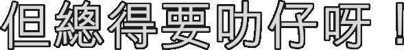
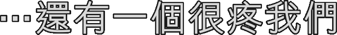
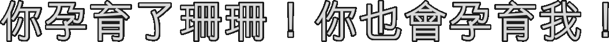
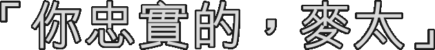
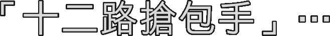
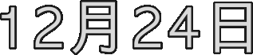

#1
:48,792->51,125
在麥太即將臨盆的時候
#2
:51,250->54,000
一隻膠兜在九龍上空飛過
#3
:55,042->58,208
沿荔枝角道直出大角咀道
#4
:58,375->1:04,750
經好彩酒家左轉花園街樂園牛丸王⋯
#5
:1:05,750->1:06,958
更正一下：
#6
:1:07,083->1:10,042
先到街市大樓妹記魚腩粥外邊
#7
:1:10,333->1:13,292
轉呀，轉⋯再更正一下：
#8
:1:13,375->1:18,458
直出亞皆老街跨過火車橋右轉太平道
#9
:1:18,583->1:23,792
再右拐窩打老道向女人街方向飛⋯
#10
:1:23,917->1:25,708
飛呀，飛⋯
#11
:1:25,875->1:29,042
膠兜最後飛進廣華醫院候產房
#12
:1:29,208->1:32,500
也就是在麥太右邊額角上⋯
#13
:1:32,792->1:35,083
更正：左邊額角上⋯
#14
:1:35,250->1:37,708
轉呀，轉⋯
#15
:1:38,167->1:40,167
麥太認定這是異像
#16
:1:40,667->1:43,292
於是向額角上的膠兜許願
#17
:1:43,500->1:47,167
腦海中同時出現即將誕生的兒子容貌⋯
#18
:1:47,333->1:50,458
希望他好聰明，讀書好叻！
#19
:1:50,708->1:53,833
膠兜對麥太的願望似乎沒有反應
#20
:1:53,958->1:56,167
於是她向膠兜補充說：
#21
:1:56,333->1:58,875
或者讀書唔叻，工作叻呢？
#22
:1:59,000->2:00,542
又或者⋯
#23
:2:00,667->2:02,542
又或者好靚仔，好靚仔
#24
:2:02,708->2:06,042
跟周潤發，梁朝偉那麼靚仔！
#25
:2:06,750->2:12,042
膠兜仍然在轉，毫無點頭跡象
#26
:2:12,167->2:13,583
麥太一時心虛
#27
:2:13,792->2:17,667
趕忙趁膠兜落地前另許一個願望：
#28
:2:18,042->2:21,708
唔聰明唔靚仔也算了，只要福星高照
#29
:2:21,875->2:24,917
一世夠運，逢凶化吉！
#30
:2:25,958->2:29,542
靠自己能力解決事情當然最好
#31
:2:29,667->2:31,917
不過運氣還是很重要的
#32
:2:32,167->2:35,500
雖是說像梁朝偉周潤發也行運定了
#33
:2:36,292->2:38,875

但總得要叻仔呀！
#34
:2:42,208->2:44,542
最後，膠兜「嘀督」一聲落地
#35
:2:44,708->2:49,458
嘀督？嘀督，就是答應了
#36
:2:49,583->2:52,417
麥太想，這次走運了！
#37
:2:52,583->2:54,167
可是答應了些什麼呢？
#38
:2:54,958->2:57,375
叻仔？好運？
#39
:2:57,500->2:59,417
還是似周潤發？
#40
:3:00,667->3:02,708
為了紀念這賜福的膠兜
#41
:3:03,208->3:06,250
麥太決定把兒子命名麥膠
#42
:3:07,250->3:09,750
不行，膠膠聲，多難聽！
#43
:3:09,958->3:11,958
還是喚他麥兜！
#44
:3:12,167->3:13,292
各位⋯
#45
:3:13,458->3:16,208
我就是險些給定名麥膠的小朋友⋯
#46
:3:16,875->3:18,542
麥兜！
#47
:4:43,583->4:45,083
麥太，沒見面一陣
#48
:4:45,250->4:47,083
怎麼小腿粗起來了？
#49
:4:47,208->4:48,875
可憐呀，每天撲來撲去⋯
#50
:4:49,042->4:50,500
替兒子找幼稚園！
#51
:4:50,833->4:52,667
怎麼不試一試好彩酒樓對面
#52
:4:52,792->4:54,667
舊中僑國貨樓上的⋯
#53
:4:54,792->4:57,083
春田花花幼稚園？
#54
:4:57,292->4:59,833
就是座落界限街南昌街交界⋯
#55
:5:00,042->5:01,667
銀城美食廣場附近的⋯
#56
:5:01,833->5:03,833
春田花花幼稚園？
#57
:5:04,000->5:08,208
對！深水埗地鐵站步行不用1 0分鐘！
#58
:5:08,333->5:11,625
春田花花幼稚園，師資優良⋯
#59
:5:11,750->5:14,208
而且還有西人教英文！
#60
:5:14,333->5:16,125
西人教英文？
#61
:5:16,250->5:16,958
是呀！
#62
:5:17,125->5:22,417
春田花花，確有好多西人呀！
#63
:5:31,292->5:35,958
〝鵝滿是快烙滴好耳痛⋯〞
#64
:5:36,042->5:40,917
〝鵝悶天天一戲個窗！〞
#65
:5:41,042->5:45,625
〝鵝們在殼習，鵝悶載升脹⋯〞
#66
:5:45,750->5:50,792
〝鵝悶是春天滴化！〞
#67
:5:51,833->5:54,083
這個豬樣白兔小朋友⋯
#68
:5:54,292->5:58,625
橫看豎看也不像發哥偉仔的一個⋯
#69
:5:58,792->6:01,167
就是我，麥兜
#70
:6:02,292->6:04,000
這是我就讀的幼稚園
#71
:6:04,875->6:06,542
校長是潮州人
#72
:6:07,000->6:08,875
可能是潮州口音的關係
#73
:6:09,083->6:10,208
這麼多年來⋯
#74
:6:10,458->6:12,875
我其實不大明白他的說話
#75
:6:14,625->6:17,833
蛋撻！ 蛋撻！
#76
:6:18,000->6:23,583
荔芋火鴨札！ 荔芋火鴨札！
#77
:6:23,750->6:29,792
忘記校訓九十七⋯ 忘記校訓九十七⋯
#78
:6:29,958->6:33,083
也不能忘記校訓九十八！
#79
:6:33,250->6:38,792
也不能忘記校訓九十八！
#80
:6:39,167->6:40,667
好！各位同學⋯
#81
:6:40,833->6:43,208
今天的早會主要是跟大家分享
#82
:6:43,375->6:45,000
一個重要主題：
#83
:6:45,375->6:48,417
小朋友，這個月你們交過學費沒有？
#84
:6:48,583->6:50,792
交過了！
#85
:6:50,958->6:54,375
太好了！大家去上堂吧
#86
:6:57,875->7:00,417
你們可能覺得這間幼稚園很爛
#87
:7:00,583->7:03,125
可是，對我和我一班同學
#88
:7:03,708->7:06,625
這兒是我們最快樂，最美麗的樂園⋯
#89
:7:08,750->7:10,000

⋯還有一個很疼我們
#90
:7:10,125->7:12,833
就是有點遊魂的Miss Chan
#91
:7:13,917->7:16,083
她的志願是做第二個王菲
#92
:7:16,375->7:18,708
做第二個陳慧琳也可以
#93
:7:18,833->7:20,750
我們現在開始點名
#94
:7:21,083->7:22,708
麥嘜同學！ 到！
#95
:7:22,917->7:24,375
亞輝同學！ 到！
#96
:7:24,500->7:26,667
菇時同學！ 到！
#97
:7:26,833->7:28,750
得巴同學！ 到！
#98
:7:28,917->7:31,708
阿May同學！ 到！
#99
:7:31,875->7:33,750
阿June同學！ 到！
#100
:7:33,917->7:36,667
阿May同學！ 到！
#101
:7:36,958->7:40,000
麥嘜同學！ 到！
#102
:7:40,167->7:41,292
阿May同學！
#103
:7:41,458->7:43,417
Miss Chan，我點過兩次了！
#104
:7:43,625->7:45,208
呀，真的嗎？
#105
:7:45,917->7:48,417
校長早晨！
#106
:7:49,292->7:52,250
校長再見！
#107
:7:53,250->7:55,250
我們現在繼續點名
#108
:7:55,792->7:57,583
阿June同學！ 到！
#109
:7:57,792->7:58,958
亞輝同學！ 到！
#110
:7:59,167->8:01,333
得巴同學！ 到！
#111
:8:02,125->8:03,250
阿May同學！ 到！
#112
:8:03,500->8:05,500
麥嘜同學！ 到！
#113
:8:05,750->8:07,875
菇時同學！ 到！
#114
:8:08,125->8:09,458
菇時同學！ 到！
#115
:8:09,625->8:11,375
還有誰沒點過嗎？
#116
:8:11,542->8:13,458
麥兜！
#117
:8:14,250->8:15,667
麥兜同學！
#118
:8:16,667->8:18,208
麥兜同學！
#119
:8:18,708->8:20,000
麥兜同學！
#120
:8:20,167->8:22,167
麥嘜呀，即是呢⋯
#121
:8:22,333->8:23,625
我好像覺得呢⋯
#122
:8:23,792->8:27,625
有什麼人在喊我似的
#123
:8:28,583->8:30,500
你們不要以為我心散
#124
:8:30,875->8:33,667
其實我正在思考一個學術問題：
#125
:8:33,833->8:36,917
橙，為什麼會是「痾－爛－煮」呢？
#126
:8:37,542->8:39,833
媽媽說吃橙可通大便
#127
:8:40,042->8:44,542
「痾」這個我明白，可是「爛－煮」呢？
#128
:8:44,708->8:47,125
還有這個「芭－娜－哪」香蕉
#129
:8:47,292->8:50,375
為什麼雨傘又會是「暗－芭－娜－哪」呢？
#130
:8:50,542->8:52,958
我「暗」的「暗」掉一條蕉
#131
:8:53,250->8:57,083
至多是痾爛煮，怎麼會下起雨來呢？
#132
:8:57,958->9:00,500
這世界還有很多事情我弄不明白
#133
:9:00,667->9:02,292
但我不害怕
#134
:9:02,375->9:04,667
我想，有天我唸完幼稚園
#135
:9:04,833->9:08,000
升小學，上中學
#136
:9:08,125->9:09,750
再唸大學⋯
#137
:9:09,875->9:11,167
當我大學畢業的時候
#138
:9:11,500->9:13,292
我知道我會明白一切！
#139
:9:13,458->9:14,583
那時候⋯
#140
:9:15,125->9:17,292
我買所房子給媽媽！
#141
:9:21,083->9:24,125
幼稚園樓下，由校長兼營的茶餐廳
#142
:9:24,292->9:27,375
我們一班同學下課後經常光顧
#143
:9:27,583->9:30,125
魚蛋粗麵，麻煩你 粗麵買光了
#144
:9:30,417->9:33,917
那樣子⋯來碗魚蛋河粉吧 魚蛋買光了
#145
:9:34,083->9:37,792
那麼⋯金錢肚粗麵好了 粗麵買光了
#146
:9:38,958->9:41,833
那麼要魚蛋油麵吧 魚蛋買光了
#147
:9:42,000->9:43,417
怎麼都買光了？
#148
:9:43,833->9:46,625
來個墨魚丸粗麵吧 粗麵買光了
#149
:9:46,917->9:47,958
又買光了？
#150
:9:48,167->9:51,708
麻煩來碗魚蛋瀨吧 魚蛋買光了
#151
:9:51,917->9:55,333
麥兜呀，魚蛋跟粗麵都買光了
#152
:9:55,542->9:58,917
即是所有魚蛋跟粗麵的配搭都沒了
#153
:10:00,375->10:02,125
沒有那些配搭嗎？
#154
:10:02,458->10:04,917
麻煩你，淨要魚蛋吧 魚蛋買光了
#155
:10:05,083->10:06,667
那麼淨要粗麵呢？ 粗麵買光了
#156
:10:07,792->10:08,708
看到這裡⋯
#157
:10:08,875->10:11,250
大家大概都知道我是個怎麼樣的叻仔
#158
:10:11,583->10:13,958
那時候我無憂無慮，萬事無所謂－－
#159
:10:14,292->10:17,000
魚蛋買光了？那麼粗麵吧
#160
:10:17,167->10:20,042
麥兜，射呀！
#161
:10:23,833->10:25,625
看著自己每天痾爛煮⋯
#162
:10:26,333->10:27,625
每天長肉⋯
#163
:10:27,833->10:29,292
我感到充滿力量！
#164
:10:29,458->10:30,833
世界好美麗！
#165
:10:33,875->10:36,750
有一首歌，Miss Chan唱的好聽
#166
:10:37,000->10:38,375
我時常想著學習
#167
:10:38,500->10:41,667
可每次我總唱成「痾」什麼什麼的⋯
#168
:10:41,792->10:44,375
是All Things Bright and Beautiful吧？
#169
:10:44,542->10:46,375
是的，一切都好！
#170
:10:46,458->10:47,708
世上一切，一切一切⋯
#171
:10:47,833->10:50,375
所有那些，都好！
#172
:11:54,708->11:56,500
一、二、三、四、五、六、七⋯
#173
:11:56,625->11:57,792
多勞多得！
#174
:11:57,958->12:01,417
星期一至星期七⋯多勞多得！
#175
:12:01,792->12:03,750
這位喊得特勁的中年母豬
#176
:12:03,875->12:05,750
就是我媽媽麥太
#177
:12:06,083->12:07,500
我媽媽真的很勁
#178
:12:07,708->12:09,833
一個女人揹起整個世界！
#179
:13:06,583->13:08,875
是的，我媽媽真的很厲害
#180
:13:09,042->13:11,792
除了兼任保險，地產經紀及trading⋯
#181
:13:11,958->13:15,333
她還趁高科技熱潮搞了個烹飪網站⋯
#182
:13:15,750->13:19,500
www．麥太世界．com
#183
:13:20,042->13:22,292
她做的菜，同樣厲害
#184
:13:23,333->13:25,500
歡迎大家收看＜麥太世界＞
#185
:13:26,042->13:27,542
今日為大家介紹一個⋯
#186
:13:27,708->13:31,125
簡單別緻的小菜紙包雞
#187
:13:31,292->13:33,625
家中小朋友一定好喜歡
#188
:13:33,833->13:37,208
材料很簡單：一個雞包
#189
:13:37,708->13:42,750
將雞包底部的紙撕下來⋯慢慢地撕
#190
:13:42,958->13:45,708
就會得到一張雞包紙
#191
:13:46,125->13:49,375
把雞包紙一反反轉
#192
:13:49,792->13:54,667
這一味紙包雞就完成了，很容易是吧？
#193
:13:54,833->13:56,792
多謝大家收看
#194
:14:04,667->14:07,083
好高興這麼快又跟大家見面
#195
:14:07,250->14:10,708
接下來我會教大家整一味紙雞包
#196
:14:11,292->14:14,667
材料也很簡單，只需要白紙一張
#197
:14:14,958->14:19,333
只要把這紙這樣子⋯
#198
:14:20,042->14:22,917
一個紙雞包就這樣完成了
#199
:14:23,083->14:26,708
各位小朋友，像雞包不像呀？
#200
:14:33,292->14:37,375
現在要教大家一味別緻小菜－
#201
:14:37,542->14:40,958
包雞紙包雞包紙包雞
#202
:14:41,125->14:45,042
首先將紙包雞小心撕開
#203
:14:45,500->14:49,708
大家就會有一張紙包雞及一塊雞
#204
:14:49,875->14:54,458
接著把雞包紙這樣子包起那塊雞
#205
:14:54,625->14:59,458
再依照這樣子用包雞紙把它包起
#206
:14:59,875->15:05,292
一味「包雞紙包雞包紙包雞」完成了！
#207
:15:05,458->15:06,958
真的很簡單吧？
#208
:15:07,083->15:09,250
還真有一塊雞吃呢！
#209
:15:16,208->15:17,875
今日為大家介紹一味⋯
#210
:15:18,042->15:19,458
小朋友一定喜歡的⋯
#211
:15:19,917->15:24,375
雞包包雞包包雞包紙包紙⋯
#212
:15:24,542->15:27,667
包雞包雞包紙包雞
#213
:15:29,750->15:31,583
做法亦很簡單
#214
:15:31,792->15:34,958
只要將雞包包住個雞包
#215
:15:35,167->15:36,667
再包住個雞包⋯
#216
:15:36,833->15:38,542
包住張雞包紙
#217
:15:38,708->15:41,708
再包包包包包住個紙雞包
#218
:15:41,917->15:46,250
再包包包，紙紙紙
#219
:15:46,375->15:52,542
紙包紙，紙包雞，雞包紙，紙包雞⋯
#220
:15:55,083->15:57,750
可我媽媽也有她温柔的一面
#221
:15:57,917->16:01,083
例如每晚睡覺前，她都會說故事給我聽
#222
:16:02,375->16:05,792
從前，有個小朋友撒謊；有一天⋯
#223
:16:06,000->16:07,833
他死了！
#224
:16:10,667->16:13,792
從前，有個小朋友很勤力唸書⋯
#225
:16:13,958->16:16,583
他長大後，發財了！
#226
:16:18,375->16:21,708
從前，有個小朋友不孝，有天⋯
#227
:16:21,833->16:23,417
他扭了腳骸！
#228
:16:23,542->16:26,208
媽媽，我想睡覺
#229
:16:30,167->16:34,625
從前，有個小朋友早睡晚起；第二天⋯
#230
:16:34,750->16:36,625
他死了！
#231
:16:38,250->16:41,167
我媽媽就是這樣子，一切都那麼直接
#232
:16:41,750->16:43,167
她愛得我直接⋯
#233
:16:43,333->16:44,875
對我的期望直接
#234
:16:45,417->16:46,875
對她，一、二、三、四、五、六、七
#235
:16:47,042->16:48,500
沒有不成的事
#236
:17:08,458->17:11,500
可有些事情，要是真的不成呢？
#237
:17:13,042->17:14,792
日子一天一天的過
#238
:17:15,000->17:16,917
首先是周潤發事件⋯
#239
:17:17,167->17:18,875
拜託不要再提了！
#240
:17:19,917->17:20,875
至於好運⋯
#241
:17:21,042->17:23,750
我用一雙童子手替媽媽抽的六合彩號碼
#242
:17:24,250->17:27,875
奇蹟般似的一個號碼也沒中過！
#243
:17:30,167->17:31,458
叻仔？
#244
:17:32,375->17:36,542
我也試過努力唸書，可是⋯
#245
:17:38,375->17:40,625
可是⋯我仍然有夢
#246
:17:44,292->17:49,417
馬爾代夫，座落於印度洋的世外桃源
#247
:17:50,125->17:56,375
藍天白雲，椰林樹影，水清沙幼
#248
:17:56,500->18:00,875
七彩繽紛的珊瑚，目不暇給的熱帶魚
#249
:18:01,042->18:07,292
充滿赤道活力的原始海洋，脫離繁囂
#250
:18:07,458->18:09,792
體驗熱情如火的風土人情
#251
:18:09,958->18:13,333
享受一個脫俗出塵的夢幻之旅
#252
:18:14,500->18:20,250
犀利旅行社，旅行社牌照號碼350999
#253
:18:22,792->18:25,625
媽媽你知道馬爾代夫在哪兒嗎？
#254
:18:25,958->18:27,417
很遠的
#255
:18:27,625->18:28,708
有多遠？
#256
:18:28,917->18:30,375
得搭飛機
#257
:18:30,708->18:33,458
媽媽你會帶我去嗎？
#258
:18:34,458->18:37,500
會！發財了再說吧
#259
:18:37,625->18:40,125
那麼媽媽你什麼時候發？
#260
:18:41,875->18:43,250
快了⋯
#261
:18:43,417->18:44,792
發夢呀！
#262
:19:21,167->19:23,833
校長早晨！
#263
:19:24,667->19:28,000
校長再見！
#264
:19:29,333->19:32,083
你最喜愛的地方是哪兒？
#265
:19:32,500->19:35,708
我最喜愛的地方是日本
#266
:19:36,042->19:39,208
那兒有Disneyland 和Hello Kitty Land
#267
:19:39,333->19:43,583
我這個髮夾也是在那兒買的
#268
:19:44,167->19:47,083
我最喜愛的地方是加拿大
#269
:19:47,250->19:50,375
婆婆跟舅父他們都在加拿大
#270
:19:50,958->19:53,625
我最喜愛的地方是泰國
#271
:19:53,792->19:57,917
那兒有很好多水上活動，還有魚翅吃
#272
:19:58,458->20:01,292
我最喜愛的地方⋯
#273
:20:01,417->20:03,000
就是那間什麼！
#274
:20:03,125->20:06,667
那兒有歡樂天地，還有美食廣場
#275
:20:06,958->20:09,917
那兒的海南雞飯很大碟的
#276
:20:10,042->20:13,250
對了，那地方叫銀城中心
#277
:20:13,417->20:17,250
那店子的飯很多，很大碟的！
#278
:20:18,458->20:22,875
不過說到我最想去的地方，那可厲害了
#279
:20:23,000->20:27,917
那兒藍天白雲，椰林樹影，水清沙幼
#280
:20:28,042->20:32,292
座落於印度洋的世外桃源
#281
:22:10,583->22:13,458
衰仔，快點起床上學
#282
:22:13,667->22:14,667
咦？
#283
:22:14,792->22:16,958
媽媽！
#284
:22:24,042->22:26,125
開點藥給他吃就沒事了
#285
:22:26,542->22:29,250
醫生，吃了藥會不會有那個什麼的？
#286
:22:29,292->22:30,625
不會！
#287
:22:30,792->22:32,125
那麼吃藥用不用那個什麼的？
#288
:22:32,250->22:33,875
不用！給他打口針吧！
#289
:22:34,292->22:36,333
怎麼？得打針？
#290
:22:36,458->22:38,917
他最怕打針的了
#291
:22:40,875->22:43,167
那麼他怕不怕死？
#292
:23:38,250->23:41,958
沒事吧？快點先把藥水喝掉！
#293
:23:42,125->23:45,125
媽媽我不想喝藥水
#294
:23:45,292->23:47,917
不要呀媽媽，我不喝呀
#295
:23:48,042->23:50,458
我不喝士多啤梨藥水呀！
#296
:23:50,625->23:53,583
別哭了，不喝藥水病不會好的
#297
:23:53,708->23:56,917
乖乖，病好了媽媽帶你去馬爾代夫
#298
:23:57,542->23:58,708
真的嗎？
#299
:23:58,833->24:00,625
媽媽什麼時候騙過你？
#300
:24:01,125->24:03,542
乖，先把藥水喝掉
#301
:24:09,458->24:11,875
好呀，馬爾代夫！
#302
:24:12,292->24:13,250
馬爾代夫！
#303
:24:13,458->24:14,417
馬爾代夫！
#304
:24:14,542->24:15,792
馬爾代夫！
#305
:24:16,333->24:19,083
媽媽，那麼我們什麼時候去？
#306
:24:19,792->24:25,042
你先把藥水喝掉，病好了我就去訂機票
#307
:24:26,125->24:28,000
來，多喝一點！
#308
:24:45,917->24:47,917
媽媽，你看！
#309
:24:50,750->24:53,708
媽媽你看，我病好了！
#310
:24:53,958->24:56,000
我把藥都吃光了
#311
:24:56,167->24:58,667
家中的東西有什麼沒給你吃光的？
#312
:24:58,833->25:02,417
這次不同呀，原來這麼一大樽的
#313
:25:02,583->25:05,750
我喝一格，又喝一格，又喝一格⋯
#314
:25:06,042->25:08,333
就給我喝光了！
#315
:25:14,083->25:15,667
喝光了就叻仔了！
#316
:25:15,833->25:18,167
喝光了就病好了！
#317
:25:18,292->25:19,167
媽媽呀⋯
#318
:25:19,333->25:20,375
什麼事？
#319
:25:20,500->25:22,917
我們什麼時候去馬爾代夫？
#320
:25:23,083->25:24,750
什麼馬爾代夫？
#321
:25:24,958->25:28,417
你說我病好帶我去馬爾代夫的呀！
#322
:25:28,583->25:31,958
馬爾代夫，椰林樹影，水清沙幼⋯
#323
:25:32,083->25:35,167
座落於印度洋的世外桃源呀！
#324
:25:36,250->25:38,667
想不到你還有點文采
#325
:25:38,833->25:40,125
說得不錯呀！
#326
:25:41,750->25:45,250
我不是光說的呀，媽媽你說過⋯
#327
:25:45,458->25:50,417
我病好了帶我去馬爾代夫的！
#328
:25:50,583->25:53,500
我是說發了財就帶你去
#329
:25:54,417->25:58,708
不是的，媽媽你說我病好了就去的
#330
:26:01,625->26:06,083
你分明講過病好了就去馬爾代夫的
#331
:26:07,042->26:09,125
你講過的！
#332
:26:09,958->26:12,000
好了，別哭了
#333
:26:12,167->26:13,708
帶你去馬爾代夫好了
#334
:26:13,875->26:15,542
真的嗎？ 對
#335
:26:15,750->26:17,000
什麼時候去？
#336
:26:17,167->26:18,542
發財再說
#337
:26:18,708->26:20,167
你早發財了⋯
#338
:26:20,333->26:22,042
好了好了，發財了
#339
:26:22,208->26:23,500
我們下個星期去，好了吧？
#340
:26:23,625->26:24,542
太好了！
#341
:27:00,333->27:03,917
麥嘜，我是麥兜呀
#342
:27:04,042->27:06,167
是這樣子的，我明天就飛了
#343
:27:06,458->27:08,667
對 ⋯是嗎？
#344
:27:08,833->27:10,292
飛機餐很難吃的嗎？
#345
:27:10,417->27:12,167
也得吃呀！
#346
:27:12,333->27:14,417
難道自己帶東西上去吃嗎？
#347
:27:14,542->27:15,542
還在講？
#348
:27:15,708->27:18,208
快點幫手執行李
#349
:27:18,375->27:22,625
跟我向他們說，我明天去馬爾代夫了
#350
:27:22,833->27:26,708
那邊藍天白雲，椰林樹影⋯
#351
:27:26,833->27:27,917
還在講！
#352
:27:28,042->27:29,500
來了！
#353
:27:30,125->27:33,417
要執行李了，回來再跟你說吧
#354
:27:33,583->27:35,125
再見！
#355
:27:44,667->27:48,458
媽媽，我得把出世紙帶著嗎？
#356
:27:48,625->27:49,458
也要的
#357
:27:49,583->27:50,542
那麼成績表呢？
#358
:27:50,667->27:51,917
成績表就不用了
#359
:27:52,083->27:55,292
太好了！嚇得我！
#360
:28:05,292->28:06,875
找到了！
#361
:28:07,042->28:09,583
出世紙給我找到了！
#362
:28:12,375->28:20,917
媽媽你替我收好它別拋掉
#363
:28:21,083->28:23,500
拋掉就去不成了
#364
:32:22,167->32:24,875
早機去，晚機返
#365
:32:25,083->32:27,292
媽媽說這樣才夠精明
#366
:32:27,417->32:28,583
就這樣⋯
#367
:32:28,917->32:30,875
我過了我小時候最精明⋯
#368
:32:31,000->32:32,875
最美麗的一天
#369
:32:33,417->32:35,958
依你說，紙是否可以包著雞呢？
#370
:32:36,542->32:37,875
也可以的⋯
#371
:32:38,583->32:41,000
特別是小小一塊的
#372
:33:06,042->33:08,250
媽媽晚安！
#373
:33:46,542->33:48,000
最新消息
#374
:33:48,125->33:52,292
奧運滑浪風帆選手李麗珊五場四勝
#375
:33:52,458->33:55,667
奪得香港歷史上第一面奧運金牌！
#376
:33:55,833->33:59,708
消息說當李麗珊獲悉自己穩奪金牌後
#377
:33:59,833->34:03,875
激動地對在場記者表示她今次的成績⋯
#378
:34:04,000->34:07,667
足以證明香港運動員不是臘鴨！
#379
:34:09,292->34:13,708
對不起，應該 是垃圾，不是臘鴨！
#380
:34:13,875->34:18,875
對不起，應該 不是垃圾，也不是臘鴨！
#381
:34:19,042->34:21,000
特別報告完畢
#382
:34:25,042->34:27,208
媽媽好像又有計了
#383
:34:28,000->34:30,500
靚仔，好運，叻仔⋯
#384
:34:30,625->34:32,458
好像都沒希望了
#385
:34:32,958->34:35,458
是不是可以靠手瓜呢？
#386
:34:36,958->34:38,333
於是，一個夢還沒醒⋯
#387
:34:38,500->34:40,667
我又得到另一個夢
#388
:34:43,500->34:45,417
應該是腳瓜
#389
:34:46,042->34:47,583
我知道一點也不容易
#390
:34:48,875->34:51,583
我知道要找到黎根絕對不容易
#391
:34:52,875->34:56,417
我知道要他收我做徒弟更加不容易
#392
:34:59,708->35:03,250
但無論多不容易，我都要試一試
#393
:35:03,417->35:05,500
我要黎根收我做徒弟！
#394
:35:05,833->35:09,875
無論幾辛苦，我一定要得到奧運金牌！
#395
:35:14,250->35:26,250
長洲！長洲！
#396
:35:26,792->35:31,250

你孕育了珊珊！你也會孕育我！
#397
:35:31,542->35:34,542
當我站在奧運會頒獎台上
#398
:35:34,792->35:38,375
我會舉起金牌跟全世界說：
#399
:35:38,542->35:42,083
香港運動員不是垃圾！
#400
:35:49,792->35:53,417
長洲，我終於來到長洲了！
#401
:35:58,333->36:05,583
長洲，我得親吻這片聖潔的土地！
#402
:36:09,542->36:13,667
小朋友，這兒是南丫島呀！
#403
:36:14,667->36:19,542
南丫島？它也孕育了周潤發！
#404
:36:29,708->36:34,500
想不到我黎根避進南丫島也給你發現
#405
:36:35,292->36:39,500
小朋友，你知道什麼是狗仔隊吧？
#406
:36:39,667->36:45,083
加上總有小朋友及家長來說要拜我為師
#407
:36:45,250->36:47,833
我才過來南丫島避一避
#408
:36:48,208->36:50,083
至於拜師的事⋯
#409
:36:50,250->36:51,917
拜你個頭！
#410
:36:52,250->36:55,750
你們這些住香港島的小朋友驕生慣養
#411
:36:55,875->36:57,708
怎麼吃得苦？
#412
:36:57,833->37:00,000
想跟珊珊般得奧運金牌？
#413
:37:00,083->37:02,000
別作夢了！
#414
:37:05,333->37:09,000
小朋友，你看！
#415
:37:15,375->37:16,167
這個⋯
#416
:37:16,333->37:21,292
這腳瓜⋯好粗好大！比一節瓜還要大！
#417
:37:21,417->37:23,667
腳瓜的肌肉非常結實⋯
#418
:37:23,875->37:27,167
青筋凸現，鋼線似的
#419
:37:27,625->37:30,833
每一條腳毛都硬似鐵釘
#420
:37:31,000->37:35,042
腳趾甲有一吋厚，究竟⋯
#421
:37:35,208->37:36,667
要行過幾多座山⋯
#422
:37:36,833->37:38,208
跨過幾多個海⋯
#423
:37:38,375->37:39,792
吃過幾多苦頭⋯
#424
:37:39,917->37:44,875
才可以練成這舉世無雙的腳瓜？
#425
:37:48,750->37:51,583
我⋯我一定要練成這腳瓜！
#426
:37:51,875->37:52,917
師傅！
#427
:37:57,125->37:59,667
我可以去小個便嗎？
#428
:38:03,500->38:07,250
每次唱這首歌，我都會急小便
#429
:38:07,875->38:11,375
現在先去，一回恐怕還是會急
#430
:38:11,875->38:14,542
但是我現在一定要唱這首歌
#431
:38:14,708->38:17,708
希望可以改變黎根對我的看法
#432
:38:18,125->38:20,333
我要用這歌打動黎根
#433
:38:20,500->38:22,958
我要黎根收我做徒弟！
#434
:38:23,125->38:25,917
歌，是這樣唱的⋯
#435
:38:26,042->38:27,542
「大包，整多兩籠」
#436
:38:27,667->38:29,417
「大包，整多兩籠」
#437
:38:29,542->38:33,250
「大包，整多兩籠唔怕滯」
#438
:38:33,375->38:35,083
「大包，整多兩籠」
#439
:38:35,208->38:36,875
「大包，整多兩籠」
#440
:38:37,042->38:40,667
「大包，整多兩籠唔怕滯」
#441
:38:41,000->38:42,583
「大包，整多兩籠」
#442
:38:42,708->38:44,500
「大包，整多兩籠」
#443
:38:44,667->38:48,875
「大包，整多兩籠唔怕滯」
#444
:38:49,167->38:54,333
「食晒個包，腳瓜大個」
#445
:38:54,500->38:57,542
「孝順我阿媽」
#446
:38:58,375->39:03,750
「食晒個包，腳瓜硬朗」
#447
:39:03,917->39:07,333
「再奉獻國家」
#448
:39:08,458->39:10,000
「大包，整多兩籠」
#449
:39:10,125->39:11,875
「大包，整多兩籠」
#450
:39:12,042->39:15,500
「大包，整多兩籠唔怕滯」
#451
:39:15,708->39:17,667
「大包，整多兩籠」
#452
:39:17,792->39:19,458
「大包，整多兩籠」
#453
:39:19,625->39:24,792
「大包，整多兩籠唔怕滯」
#454
:39:28,583->39:32,875
黎根聽完歌以後，表情有點古怪⋯
#455
:39:33,542->39:36,958
我一定要好好把握這機會
#456
:39:37,417->39:39,833
師傅！你收我做徒弟吧！
#457
:39:40,000->39:43,750
你唔收我做徒弟，我一世都這麼跪著！
#458
:39:43,875->39:46,042
起來呀！
#459
:39:46,167->39:47,250
多謝師傅！
#460
:39:47,417->39:50,167
不⋯我是叫你扶我起來呀！
#461
:39:50,333->39:57,875
不成了！我的腳瓜太痺了！
#462
:40:07,833->40:10,917
我將今天發生的事講給媽媽聽
#463
:40:11,625->40:14,333
媽媽一句話也沒說
#464
:40:14,458->40:18,250
從冰箱內拿了只雪雞出來解凍
#465
:40:20,667->40:24,500
晚飯時，媽媽倒了三杯米酒
#466
:40:24,833->40:30,333
又將幾隻橙和蒸好的雞放到祖先前
#467
:40:30,500->40:34,250
媽媽叫我跪低，向祖先請請
#468
:40:34,667->40:38,458
媽媽跟著又唸唸有詞的
#469
:40:39,500->40:44,292
然後我們一起向祖先再拜了幾拜
#470
:40:45,708->40:49,875
媽媽蹲低把酒灑到地上
#471
:40:50,000->40:52,750
莊重而溫柔地跟我說：
#472
:40:52,875->40:54,750
以後生生性性
#473
:40:55,208->40:58,667
跟師傅學習，光宗耀祖！
#474
:41:05,625->41:10,083
媽媽在長洲找了間酒樓擺拜師宴
#475
:41:11,000->41:14,583
因為我是師傅最後一個入室弟子
#476
:41:14,750->41:18,125
到賀的鄉紳父老持別多
#477
:41:18,792->41:21,333
想不到黃德森也來了
#478
:41:21,542->41:24,083
還讚我背上的肉厚
#479
:41:24,250->41:28,292
珊珊因為去了集訓，沒來
#480
:41:28,458->41:31,333
麥嘜，菇時跟得巴都來了
#481
:41:31,500->41:35,292
還帶著成績表，獎牌和大包
#482
:41:35,708->41:39,875
他們都希望黎根也可以收他們做徒弟
#483
:41:41,000->41:44,542
吃過雞絲翅，就是拜師儀式
#484
:41:44,708->41:49,292
媽媽倒了杯茶給我，讓我給師傅喝
#485
:41:49,458->41:53,125
我千辛萬苦來長洲找黎根⋯
#486
:41:53,250->41:58,208
我終於可以跟珊珊一起練滑浪風帆了！
#487
:42:00,958->42:04,458
我將茶遞給黎根，黎根他⋯
#488
:42:05,167->42:10,292
師傅他把茶喝了，正式收我做徒弟
#489
:42:11,000->42:12,917
賓客們好像都很高興
#490
:42:13,042->42:17,833
長洲的鄉紳父老拍掌拍得特別落力
#491
:42:18,500->42:21,833
多謝各位賞面！多謝各位！
#492
:42:22,000->42:25,875
在下平生有兩項稱得上得意的絕技
#493
:42:26,000->42:28,958
第一項，是滑浪風帆！
#494
:42:29,083->42:32,875
我把它傳給外甥女珊珊了
#495
:42:33,042->42:37,708
另一項絕技，我打算傳給這個新徒弟⋯
#496
:42:37,875->42:41,958
希望他把長洲人世世代代的絕技
#497
:42:42,083->42:44,458
發揚光大！
#498
:42:46,292->42:48,583
請問那是什麼絕技呢？
#499
:42:55,958->42:59,083
第二項絕技，就是⋯
#500
:42:59,542->43:02,333
搶包山！
#501
:43:08,792->43:10,750
搶包山？
#502
:43:12,292->43:15,542
年輕觀眾可能不知「搶包山」何物
#503
:43:16,292->43:19,833
搶包山乃長洲獨有傳統節日
#504
:43:20,625->43:22,167
每年農曆四月
#505
:43:22,333->43:25,125
長洲居民均舉辦太平清醮
#506
:43:25,958->43:28,667
於北帝廟前搭起三座包山
#507
:43:29,750->43:31,333
什麼是包山呢？
#508
:43:31,792->43:32,875
顧名思義⋯
#509
:43:33,083->43:38,375
包山就是一座由好多好多包砌起的山！
#510
:43:38,750->43:41,958
一座包山，起碼六、七層樓高⋯
#511
:43:42,500->43:46,208
你可以想像一下包山有多高了吧？
#512
:43:47,250->43:51,875
搶包山，就是要把包山上的包搶到手！
#513
:43:52,542->43:53,917
鑼鼓響起
#514
:43:54,125->43:58,167
數以百計的青年一湧而上搶包
#515
:43:58,292->44:02,292
搶得位置愈高的包，就是愈大的祝福
#516
:44:02,417->44:05,833
更可以表現自己的不凡身手
#517
:44:07,000->44:11,792
在1 978年兩座包山忽然倒下，多人重傷
#518
:44:11,958->44:14,417
「搶包山」從此被禁！
#519
:44:14,583->44:18,583
而長洲獨有的傳統，亦漸被遺忘
#520
:44:22,167->44:26,125
奧運金牌⋯這一世是沒有機會的了
#521
:44:26,833->44:30,250
每個星期六我都搭船過長洲
#522
:44:30,583->44:32,375
去學搶包山⋯
#523
:44:32,583->44:36,125
一項沒有獎牌，沒有對手，沒有比賽⋯
#524
:44:36,542->44:39,958
什至沒有人知道是運動的運動
#525
:44:41,292->44:44,583
更壞的是，連包山也沒有！
#526
:44:45,583->44:48,208
師傅只是叫我去他的家⋯
#527
:44:48,417->44:51,000
在組合櫃爬來爬去
#528
:44:52,375->44:55,417
碰！三番！
#529
:44:55,583->44:58,208
別躲懶！繼續練！
#530
:45:00,833->45:04,250
一天，珊珊到了師傳家！
#531
:45:04,375->45:06,875
珊珊！我的師姐珊珊！
#532
:45:07,042->45:08,333
可以看見珊珊⋯
#533
:45:08,458->45:11,583
這幾個星期爬得再辛苦也是值得的！
#534
:45:12,042->45:13,792
珊珊！
#535
:45:13,958->45:16,125
珊你個頭！繼續練習！
#536
:45:24,083->45:25,375
還不去？
#537
:45:26,417->45:29,333
珊珊沒看見我這個師弟
#538
:45:29,667->45:33,667
我只有死死氣再爬上組合櫃
#539
:45:35,167->45:39,458
我咁大個仔，什麼「頭」也給罵過⋯
#540
:45:39,708->45:40,708
不知道為什麼
#541
:45:40,792->45:43,833
「珊你個頭」卻特別刺耳
#542
:45:43,958->45:45,333
我⋯我⋯
#543
:45:45,417->45:48,083
我唔學愴包山了！
#544
:46:10,708->46:15,083
其實今天是我第一次近距離見黎根
#545
:46:15,750->46:18,083
他恐怕都有五十歲了
#546
:46:18,208->46:20,208
卻還是一副孩子臉
#547
:46:20,333->46:22,208
雞尾包！新鮮出爐！
#548
:46:25,667->46:27,750
其實雞尾包呢⋯
#549
:46:28,333->46:31,167
你說這似不似雞尾？
#550
:46:36,917->46:39,500
麥兜他學東西⋯還可以
#551
:46:39,667->46:42,125
黎根接著說了一大堆話⋯
#552
:46:42,583->46:46,208
他的抱負，他對麥兜的期望
#553
:46:46,583->46:51,125
他說他會把他所識的毫不保留教給麥兜
#554
:46:51,708->46:53,708
黎根越說越興奮，直到雙眼發光
#555
:46:53,792->46:57,167
他又說滑浪風帆並不是他最犀利的項目
#556
:46:57,417->47:00,250
他最大強項是搶包山
#557
:47:00,833->47:03,625
他說搶包山結合了南拳
#558
:47:03,750->47:06,458
神功戲和現代器械操
#559
:47:06,750->47:11,500
他說搶包山才是他一生最大成就
#560
:47:11,625->47:13,542
縮腳，唔該！
#561
:47:15,625->47:17,333
你看！
#562
:47:18,875->47:24,542
這腳瓜⋯好粗好大！比一節瓜還要大！
#563
:47:24,708->47:26,667
腳瓜的肌肉非常結實⋯
#564
:47:26,833->47:30,125
青筋凸現，鋼線似的
#565
:47:30,708->47:33,875
每一條腳毛都硬似鐵釘
#566
:47:34,042->47:37,875
腳趾甲有一吋厚，究竟⋯
#567
:47:38,000->47:39,667
要走過幾多座山
#568
:47:39,792->47:41,625
跨過幾多個海
#569
:47:41,750->47:43,125
吃過幾多苦頭
#570
:47:43,208->47:47,500
才可以練成這舉世無雙的腳瓜？
#571
:47:53,292->47:54,000
我個仔⋯
#572
:47:54,125->47:57,750
你個仔，他日都會有這隻大腳瓜
#573
:47:58,042->48:01,583
其實我也不知道個仔要這麼粗的腳瓜⋯
#574
:48:01,708->48:02,958
有什麼用
#575
:48:03,125->48:07,542
可是看見那些凸現的青筋，不知怎樣⋯
#576
:48:08,042->48:12,542
我想起麥兜的爸爸，阿炳
#577
:48:21,042->48:26,375
我找來找去也找不到那部電子英文辭典
#578
:48:26,542->48:28,000
跑哪去了？
#579
:48:28,125->48:31,792
難道⋯不會吧？
#580
:48:36,750->48:40,875
想不到真的讓媽媽拿去了，嚇得我！
#581
:48:41,000->48:43,958
媽媽怎麼會寫起英文信？
#582
:48:44,417->48:45,583
信很短
#583
:48:45,708->48:52,042
我猜是媽媽用電子辭典逐個字譯成英文
#584
:48:52,167->48:57,125
於是我又用電子辭典把信譯回中文
#585
:48:58,083->49:03,000
信，是媽媽寫給奧委會主席的
#586
:49:04,667->49:06,083
「親愛的主席：」
#587
:49:06,250->49:08,500
「你好嗎？我很好！」
#588
:49:08,667->49:10,917
「你吃包嗎？我吃包！」
#589
:49:11,083->49:15,292
「我們居住在香港這裡的人，很愛吃包」
#590
:49:15,500->49:19,917
「小籠包，上海包，廣東包，蓮蓉包」
#591
:49:20,042->49:22,125
「好朋友，我認為
#592
:49:22,250->49:25,125
搶劫那些包，十分重要」
#593
:49:25,250->49:27,708
「也算是運動，就真！」
#594
:49:27,958->49:32,500
「要大力！大吃晚上的粥，和大節瓜！」
#595
:49:32,667->49:34,708
「按照我愚蠢的見解⋯」
#596
:49:35,000->49:38,958
「搶劫那些包，是奧運會比賽」
#597
:49:39,083->49:41,958
「讓全世界的體育家，搶過！」
#598
:49:42,125->49:43,833
「世界便和平！」
#599
:49:44,167->49:45,667
「你有孩子嗎？」
#600
:49:45,792->49:48,417
「我有一個孩子，麥兜」
#601
:49:48,750->49:50,167
終於講到我了！
#602
:49:51,500->49:54,125
「他是一個好男孩」
#603
:49:54,292->49:56,708
「他非常懂得搶劫那些包」
#604
:49:57,000->49:59,792
「有一天，我看見他，搶劫包⋯」
#605
:50:00,083->50:02,292
「搶了一個奧運金牌」
#606
:50:02,583->50:06,792
「那便是一個母親能夠有的最大的安慰」
#607
:50:07,292->50:11,167
「孩子的才幹，得到了世界人類的知道」
#608
:50:11,833->50:15,167
「父母願意做什麼的東西都得」
#609
:50:15,667->50:19,333
「於是我寫了這忽然間的信給你」
#610
:50:19,542->50:23,333
「雖然你不知道我是什麼微細的東西」
#611
:50:23,625->50:26,500
「但我的孩子很大，很大！」
#612
:50:26,667->50:29,125
「有一天，你都會知道」
#613
:50:29,875->50:31,250
「多謝合作！」
#614
:50:31,583->50:34,917

「你忠實的，麥太」
#615
:50:42,375->50:43,833
看完媽媽的信
#616
:50:44,000->50:47,000
我決定回長洲繼續學搶包山
#617
:50:48,417->50:50,458
我不是為了見珊珊
#618
:50:50,958->50:53,042
我並不知道為什麼要搶那些包
#619
:50:53,667->50:57,042
我也不相信搶包山會成為奧運項目
#620
:50:57,708->51:01,042
可是，我依然努力練習搶包山
#621
:51:01,625->51:04,125
因為，我愛我媽媽
#622
:51:05,542->51:08,958
師傅說我攀爬功夫已經不錯
#623
:51:09,458->51:12,583
可以開始教我「十二路搶包手」
#624
:51:13,000->51:16,042
師傅說當年師祖耍出這套
#625
:51:16,167->51:17,958

「十二路搶包手」⋯
#626
:51:18,125->51:21,042
連林世榮也大大讚好
#627
:51:22,167->51:24,000
後來麥嘜告訴我⋯
#628
:51:24,167->51:28,375
林世榮即是豬肉榮，是黃飛鴻的徒弟
#629
:51:29,458->51:32,458
我不知道師傅像不像黃飛鴻
#630
:51:32,833->51:35,542
我卻肯定像一塊豬肉
#631
:51:35,708->51:37,708
我是一塊揸住兩個包
#632
:51:37,833->51:40,458
在長洲轉來轉去的豬肉
#633
:51:41,458->51:46,000
我一邊練習，一邊胡思亂想；始終⋯
#634
:51:46,167->51:48,458
我還是不大喜歡搶包
#635
:51:48,917->51:50,750
我只是愛我媽媽
#636
:51:50,875->51:52,667
於是我咬實牙根⋯
#637
:51:52,792->51:55,000
一步一步，一爪一爪⋯
#638
:51:55,167->51:59,833
我最後終於練成「十二路搶包手」
#639
:52:21,208->52:23,750
喂，我是麥兜
#640
:52:23,833->52:27,833
剛才的是小朋友麥兜，我是大個佬麥兜
#641
:52:28,167->52:31,667
小朋友麥兜和大個佬麥兜除了聲音不同⋯
#642
:52:32,167->52:35,792
小朋友麥兜的世界仍然有好多幻想
#643
:52:36,583->52:38,125
仍然有好多希望
#644
:52:38,583->52:40,667
希望⋯失望⋯
#645
:52:40,833->52:42,250
希望⋯
#646
:52:42,333->52:43,625
失望
#647
:52:44,000->52:47,167
久而久之，就變成大個佬麥兜
#648
:52:47,292->52:50,542
我現在還是多說點小朋友麥兜
#649
:52:51,125->52:53,625
小朋友麥兜仍然希望希望⋯
#650
:52:54,500->52:56,417
希望真的有聖誕老人
#651
:52:56,583->53:00,042
而且好想試試聖誕火雞的滋味
#652
:53:00,833->53:03,958
對，那時我還沒吃過火雞
#653
:53:04,250->53:05,875
關於火雞的一切⋯
#654
:53:06,333->53:08,417
聖誕樹上一閃一閃的飾物
#655
:53:08,708->53:11,042
就像天上掉落的星星
#656
:53:11,250->53:13,208
落到火爐旁邊
#657
:53:14,208->53:17,667
一片片比外邊的雪還要白的雞胸肉⋯
#658
:53:18,083->53:19,708
就在我們跟前
#659
:53:20,458->53:21,833
香氣直入靈魂⋯
#660
:53:22,042->53:25,292
連守在靈魂旁邊的天使都醒過來
#661
:53:25,542->53:28,750
圍住這香而聖潔的肉⋯
#662
:53:29,417->53:34,042
在聖誕夜中飛呀，飛⋯
#663
:53:35,292->53:39,917
這關於火雞的一切，不過是我的想像
#664
:53:40,125->53:42,417
我從來沒吃過火雞⋯
#665
:53:42,625->53:44,667
連牠的氣味也沒嗅過
#666
:53:45,500->53:47,125
媽媽說火雞太大
#667
:53:47,708->53:50,083
我們一家兩口，吃不下
#668
:53:50,417->53:54,208
有年聖誕節媽媽買了半只燒鴨慶祝
#669
:53:54,417->53:56,792
當時的我，十分十分失望
#670
:53:57,792->54:00,333
又有一年，一間百貨公司結業
#671
:54:00,875->54:03,833
媽媽以四折買了個小小焗爐
#672
:54:04,250->54:06,500
可能因為買了焗爐而技癢
#673
:54:06,917->54:08,292
那日媽媽竟然跟我說⋯
#674
:54:08,417->54:11,458
讓我們明天去超級市場揪火雞
#675
:54:12,333->54:14,917
我跟媽媽把火雞揪回家的路上⋯
#676
:54:15,333->54:18,667
是我生命中最開心的時刻
#677
:54:20,292->54:22,000
火雞終於解凍了
#678
:54:22,208->54:24,542
我學著媽媽，把雙手塗滿鹽⋯
#679
:54:25,083->54:28,292
在火雞豐厚的雞胸上擦呀，擦
#680
:54:29,125->54:30,000
聯火雞時⋯
#681
:54:30,042->54:33,750
媽媽不留神漏出了火雞內的洋蔥粒
#682
:54:33,875->54:35,333
紅蘿蔔粒
#683
:54:35,708->54:37,333
我說：火雞「痾爛煮」！
#684
:54:39,042->54:41,333
好勉強把火雞塞進焗爐內
#685
:54:42,042->54:43,500

1 2月24日
#686
:54:44,000->54:47,625
上升的白煙跟奇異的焦味撥動星星
#687
:54:48,417->54:51,583
焗爐戚戚惻惻，戚戚惻惻⋯
#688
:54:52,167->54:54,875
有如天使預早送來的福音
#689
:55:03,625->55:05,250
好靚的晚上啊！
#690
:55:05,542->55:07,583
我和媽媽坐在尖東海傍
#691
:55:08,250->55:12,042
點點燈光在海面走來走去⋯
#692
:55:12,542->55:14,958
美麗又溫柔
#693
:55:16,208->55:18,000
真的好靚！
#694
:55:48,042->55:50,125
我從沒吃過這麼濃味的東西
#695
:55:50,417->55:53,625
什至杯麵，燒鴨的味道也沒有這麼濃
#696
:55:54,000->55:57,333
火雞的味道把我每一個味蕾纏住⋯
#697
:55:58,250->56:02,167
爆發⋯纏住⋯爆發⋯
#698
:56:02,333->56:03,958
就像今晚的一切
#699
:56:04,458->56:10,542
最靚最靚，最犀利，而且最溫柔
#700
:56:16,333->56:18,125
第二天我睡得很晏⋯
#701
:56:18,417->56:21,667
刷過牙我還感覺到火雞的美味
#702
:56:22,333->56:23,625
因為早餐吃得晚⋯
#703
:56:24,125->56:27,583
午餐時媽媽只煮了罐粟米湯
#704
:56:27,792->56:29,958
我用湯匙撩了兩下
#705
:56:30,625->56:33,000
竟然發現美味的火雞粒
#706
:56:34,167->56:37,083
不用說，那夜就是我渴望了⋯
#707
:56:37,208->56:40,708
很久很久很久的⋯聖誕火雞大餐！
#708
:56:40,875->56:44,875
一片片的火雞肉和伴碟的薯仔和節瓜⋯
#709
:56:45,083->56:47,708
上面淋了老抽生粉獻
#710
:56:48,833->56:52,000
我們真的好興奮，好滿足
#711
:56:52,333->56:54,500
之後，我們吃了一個星期的⋯
#712
:56:54,625->56:57,000
火雞三文治早餐
#713
:56:57,167->56:58,083
星期天
#714
:56:58,208->57:01,542
我大著膽跟媽媽說：不如去飲茶吖
#715
:57:01,792->57:03,583
媽媽罵我「冇衣食」⋯
#716
:57:03,708->57:05,708
不過還是帶了我去飲茶
#717
:57:06,333->57:08,292
之後，媽媽又有計⋯
#718
:57:08,625->57:12,083
她把冰箱內剩下來的火雞肉撕呀撕
#719
:57:12,208->57:14,625
有時候也叫我幫手撕
#720
:57:15,208->57:16,917
火雞留在指甲的味道
#721
:57:17,542->57:20,208
原來得洗好多次
#722
:57:22,958->57:25,667
銀芽火雞絲炒米，好味道
#723
:57:26,167->57:28,250
栗子 火雞絲㷛
#724
:57:29,375->57:31,583
花生火雞骨㷛粥
#725
:57:31,750->57:33,583
紙包火雞包包紙
#726
:57:34,250->57:36,542
包火雞包包包火雞包
#727
:57:37,125->57:39,667
釀火雞餡搽麵包
#728
:57:40,625->57:46,625
唉，我好後悔講過一句「火雞痾爛煮」
#729
:57:46,917->57:51,208
端午節，當我翻開我最喜歡吃的裹蒸粽⋯
#730
:57:51,375->57:55,792
發現鹹蛋旁邊是一件火雞背的時候⋯
#731
:57:56,000->57:59,667
我腦部一時想唔通，哭起來
#732
:58:00,292->58:01,792
救命呀！
#733
:58:02,792->58:05,875
媽媽悄悄把剩下的火雞扔掉
#734
:58:06,167->58:10,417
那已經是火雞解凍後差不多半年的事
#735
:58:10,542->58:14,542
我的美夢跟惡夢亦同時完結
#736
:58:15,125->58:16,625
後來我才知道⋯
#737
:58:16,792->58:18,625
一隻火雞由出世到給人宰掉
#738
:58:18,792->58:21,083
也不過是幾個月間的事
#739
:58:21,500->58:25,417
即是說，火雞死掉後跟我們一起的日子
#740
:58:25,625->58:28,208
還要長過牠的一生
#741
:58:28,833->58:31,417
我還發覺，火雞的味道⋯
#742
:58:31,583->58:35,792
將吃未吃和第一口之間已經是最高峰
#743
:58:36,333->58:40,083
之後的，不過是開始了也就吃下去
#744
:58:41,500->58:43,333
我沒有哲學家的頭腦⋯
#745
:58:43,500->58:46,542
不知道兩件事情應該得出什麼道理
#746
:58:47,542->58:49,208
可是這些想法⋯
#747
:58:49,375->58:50,750
在我長大後⋯
#748
:58:51,750->58:54,042
在一些跟聖誕節無關的日子⋯
#749
:58:54,875->58:58,292
毫無因由的在我腦中出現過三兩次
#750
:59:00,333->59:03,708
一次，是在我自己的婚宴上
#751
:59:04,208->59:05,500
一次⋯
#752
:59:05,667->59:07,917
是在我媽媽火化那天
#753
:59:08,875->59:12,833
那天，我看著天空幾縷灰色的煙
#754
:59:13,625->59:16,792
忽然間嗅到火雞又濃又淡的氣味
#755
:59:18,000->59:22,542
我好後悔要媽媽扔掉最後幾件火雞
#756
:1:00:21,833->1:00:23,208
特別報告
#757
:1:00:23,417->1:00:28,000
奧運金牌得主李麗珊決定參加今屆奧運
#758
:1:00:28,125->1:00:29,792
向全世界人再次證明⋯
#759
:1:00:29,917->1:00:32,542
香港運動員不是臘鴨
#760
:1:00:33,167->1:00:34,083
另方面⋯
#761
:1:00:34,208->1:00:37,625
香港體運總會霍震霆⋯
#762
:1:00:37,750->1:00:40,000
正式向亞運協會提出申請
#763
:1:00:40,125->1:00:43,542
香港將爭奪下屆亞運會主辦權
#764
:1:00:44,250->1:00:47,458
多個運動團體立即表示熱烈支持
#765
:1:00:48,292->1:00:50,792
其中港九新界竹戰聯誼會⋯
#766
:1:00:50,958->1:00:53,875
更希望打麻將可以成為亞運項目
#767
:1:00:54,375->1:00:57,000
另外，全港茶餐廳員工協會⋯
#768
:1:00:57,125->1:00:58,458
經已發動所有會員⋯
#769
:1:00:58,625->1:01:02,458
爭取「擲蛋撻」成為亞運比賽項目
#770
:1:01:02,917->1:01:05,125
港九燒味鹵味臘味同業會
#771
:1:01:05,250->1:01:07,500
亦向霍主席當面提出⋯
#772
:1:01:07,667->1:01:11,000
「掛臘鴨」可以成為亞運比賽項目
#773
:1:01:12,042->1:01:15,958
較為特別的是，CIC保險營業員聯同⋯
#774
:1:01:16,083->1:01:17,958
大角咀春田花花幼稚園⋯
#775
:1:01:18,125->1:01:20,167
附屬小學一班小朋友⋯
#776
:1:01:20,333->1:01:22,333
爭取「搶包山」
#777
:1:01:22,708->1:01:24,375
一項幾乎絕跡的運動⋯
#778
:1:01:24,542->1:01:28,542
成為本港舉辦亞運的重點推介比賽項目
#779
:1:02:30,917->1:02:32,042
最後⋯
#780
:1:02:32,500->1:02:34,875
最後，一切成煙
#781
:1:02:35,375->1:02:38,875
最後，他們選了「擲蛋撻」做推介項目
#782
:1:02:39,125->1:02:41,458
至於香港爭取申辦亞運的口號⋯
#783
:1:02:41,625->1:02:45,542
亦順理成章叫成「香港一蛋撻」
#784
:1:02:47,292->1:02:49,625
之後李麗珊蟬聯失敗⋯
#785
:1:02:51,917->1:02:53,000
亞運主辦權⋯
#786
:1:02:53,125->1:02:56,375
亦由一個香港人從未聽過的地方奪得
#787
:1:02:58,500->1:03:01,625
想著轉行當運動員的茶餐廳伙記⋯
#788
:1:03:01,750->1:03:05,292
都回到茶餐廳繼續擲他們的蛋撻
#789
:1:03:05,417->1:03:07,083
一切回復正常
#790
:1:03:12,375->1:03:15,792
上中學後，我再沒有練習搶包手
#791
:1:03:16,917->1:03:18,500
有時候跟媽媽飲茶⋯
#792
:1:03:18,667->1:03:21,542
我都會手快快替她搶一籠大包
#793
:1:03:22,875->1:03:25,250
之後，茶樓再不賣大包了
#794
:1:03:26,167->1:03:28,708
點心車亦轉成點心紙
#795
:1:03:29,417->1:03:31,542
一切落空
#796
:1:03:42,333->1:03:45,458
有時候我也會跟同學回到長洲燒烤
#797
:1:03:45,958->1:03:47,542
每次看見師傅⋯
#798
:1:03:47,792->1:03:49,708
他都好像老了一點
#799
:1:03:54,250->1:03:55,542
因為環保⋯
#800
:1:03:55,708->1:03:58,958
長洲的搶包都轉為塑膠
#801
:1:04:00,125->1:04:03,417
師傅說，那陣膠氣，相當臭
#802
:1:04:09,250->1:04:11,417
長洲有個張保仔洞
#803
:1:04:11,792->1:04:15,792
聽說張保仔在洞內藏了很多寶藏
#804
:1:04:16,958->1:04:20,500
因為我練過搶包手，身手比較靈活⋯
#805
:1:04:21,000->1:04:25,250
同學們叫我爬進去看看，說不定會發達
#806
:1:04:25,417->1:04:29,042
於是我就向著這個又黑又窄的洞⋯
#807
:1:04:29,333->1:04:32,417
一直爬
#808
:1:04:32,917->1:04:36,708
洞裡面什麼也沒有，只有一個盒
#809
:1:04:37,250->1:04:39,000
我小心揭開盒⋯
#810
:1:04:39,167->1:04:42,417
發現裡面一個沒吃完的大包
#811
:1:04:43,167->1:04:45,667
是不是張保仔吃過的呢？
#812
:1:04:46,958->1:04:55,542
「尋晚，食了六個餐包」
#813
:1:04:55,667->1:05:04,500
「可惜我依然係覺得仍未十分飽」
#814
:1:05:05,333->1:05:13,250
「尋晚，食了磅半方包」
#815
:1:05:13,417->1:05:24,792
「可嘆是我依然覺餓，不夠頂肚」
#816
:1:05:26,750->1:05:35,042
「年少，練了六套腳法。」
#817
:1:05:35,208->1:05:42,458
「可惜我依然未覺夠用。」
#818
:1:05:44,042->1:05:57,375
「年晚，又培育了珊珊！可惜⋯」
#819
:1:05:57,917->1:06:01,292
揸住個包，我忽然明白⋯
#820
:1:06:02,333->1:06:06,292
原來有些事情，沒有就是沒有
#821
:1:06:07,125->1:06:09,292
唔得，就是唔得
#822
:1:06:10,458->1:06:14,083
沒有魚蛋沒有粗麵沒去成馬爾代夫⋯
#823
:1:06:14,250->1:06:16,500
沒有獎牌沒有張保仔寶藏
#824
:1:06:17,250->1:06:20,542
而張保仔，也沒有咬過那個包
#825
:1:06:21,167->1:06:24,292
原來蠢，並不那麼好笑
#826
:1:06:25,583->1:06:27,000
蠢會失敗⋯
#827
:1:06:27,708->1:06:29,083
會失望
#828
:1:06:30,625->1:06:33,333
失望，並不那麼好笑
#829
:1:06:34,208->1:06:36,208
肥，都不一定好笑
#830
:1:06:37,500->1:06:39,667
肥，不一定大力
#831
:1:06:39,875->1:06:41,917
大力，亦不一定得
#832
:1:06:44,667->1:06:47,208
揸住個包，我忽然想⋯
#833
:1:06:47,583->1:06:50,042
長大了，到我要面對這個實掘掘⋯
#834
:1:06:50,750->1:06:53,417
未必可以發夢，未必那麼好笑的⋯
#835
:1:06:53,583->1:06:57,625
世界的時候，我會怎麼樣？
#836
:1:07:05,375->1:07:16,417
「⋯無力挽！」
#837
:1:07:42,250->1:07:44,542
橙
#838
:1:08:19,458->1:08:22,333
是的，我就是大個佬麥兜
#839
:1:08:23,542->1:08:26,500
肥，算大力
#840
:1:08:27,083->1:08:28,958
麻麻地可以
#841
:1:08:29,750->1:08:31,333
負家產
#842
:1:08:34,042->1:08:38,292
腳瓜是真的大，比一節瓜還要大
#843
:1:08:39,250->1:08:41,917
腳瓜上的肌肉非常結實⋯
#844
:1:08:42,375->1:08:47,083
青筋一條條凸出來，似鋼筋
#845
:1:08:47,917->1:08:50,000
至於腳趾甲⋯
#846
:1:08:50,333->1:08:53,417
有次我無無聊聊真的量了一下⋯
#847
:1:08:53,833->1:08:56,750
足有一吋厚
#848
:1:08:58,458->1:09:00,958
是的，故事講完了
#849
:1:09:01,708->1:09:03,500
這是一個嘗試
#850
:1:09:04,375->1:09:07,417
失敗⋯嘗試⋯
#851
:1:09:07,917->1:09:11,458
好多包⋯可是沒有包保成功的故事
#852
:1:09:12,875->1:09:14,500
故事說了一輪⋯
#853
:1:09:14,917->1:09:18,042
什麼也沒有？也不是
#854
:1:09:18,625->1:09:21,667
就是大了雙腳瓜
#855
:1:09:23,083->1:09:25,792
可是棟一雙腳瓜站這兒⋯
#856
:1:09:26,250->1:09:28,250
當浪打過來⋯
#857
:1:09:29,000->1:09:32,250
那感覺還真不錯
#858
:1:09:34,167->1:09:37,083
你知道我麻麻地叻佬，不懂得⋯
#859
:1:09:37,250->1:09:41,500
替自己的故事加點教訓呀錦囊呀那些
#860
:1:09:42,042->1:09:44,833
可是，浸一雙腳瓜站水中⋯
#861
:1:09:45,292->1:09:50,417
當風吹向我的腦，我會想⋯
#862
:1:09:50,750->1:09:53,167
如果媽媽看見我這個大腳瓜⋯
#863
:1:09:55,167->1:09:57,208
我猜，她會好開心
#864
:1:10:12,500->1:10:15,750
不成，還是出個錦囊！
#865
:1:10:16,417->1:10:20,708
媽媽的dot com散掉後，她又有計
#866
:1:10:21,208->1:10:24,958
她出版了一本教烹飪的食譜
#867
:1:10:25,250->1:10:28,042
食譜最後一頁教人整燒雞
#868
:1:10:28,417->1:10:30,875
方法簡單，人人可學
#869
:1:10:31,000->1:10:32,000
「燒雞」
#870
:1:10:32,292->1:10:34,375
材料是⋯雞
#871
:1:10:34,625->1:10:38,625
方法：把雞燒幾燒
#872
:1:10:38,833->1:10:43,083
就這樣，一味「燒雞」大功告成
#873
:1:10:44,417->1:10:46,375
食譜裡面補充說：
#874
:1:10:47,083->1:10:49,417
如果你想把雞燒得美味可口⋯
#875
:1:10:50,125->1:10:52,750
吃完後不會心肺實胃氣漲
#876
:1:10:53,250->1:10:58,250
秘訣是：拜託，把雞燒好一點⋯
#877
:1:10:59,083->1:11:01,208
多謝合作！
#878
:1:11:40,583->1:11:42,542
麻煩你，一客常餐
#879
:1:11:42,667->1:11:44,667
常餐？ 常餐有什麼吃？
#880
:1:11:44,833->1:11:46,042
跟特餐一樣吧
#881
:1:11:46,167->1:11:47,292
特餐是什麼？
#882
:1:11:47,458->1:11:48,792
跟快餐差不多
#883
:1:11:48,917->1:11:50,375
快餐又是什麼？
#884
:1:11:50,625->1:11:52,625
快餐即是午餐
#885
:1:11:52,833->1:11:53,875
午餐吃什麼？
#886
:1:11:54,000->1:11:55,750
午餐跟晚餐一樣
#887
:1:11:55,917->1:11:57,333
晚餐又吃什麼？
#888
:1:11:57,500->1:11:59,667
晚餐即是常餐
#889
:1:11:59,833->1:12:01,792
那麼，兩客常餐吧
#890
:1:12:01,875->1:12:04,750
今天常餐精采呀！
#891
:1:12:09,125->1:12:11,417
對不起，常餐賣光了
#892
:1:12:11,875->1:12:13,083
那改要特餐吧
#893
:1:12:13,333->1:12:15,208
特餐？特餐有什麼吃？
#894
:1:12:15,458->1:12:17,042
特餐即是午餐呀
#895
:1:12:17,542->1:12:18,792
午餐又吃什麼呢？
#896
:1:12:19,083->1:12:20,625
都是晚餐那些吧
#897
:1:12:20,875->1:12:22,292
什麼是晚餐？
#898
:1:12:22,458->1:12:23,792
跟快餐一樣
#899
:1:12:23,917->1:12:25,208
快餐吃什麼？
#900
:1:12:25,375->1:12:27,667
唉，快餐不就是常餐
#901
:1:12:27,833->1:12:29,750
常餐不是賣光了嗎？
#902
:1:12:29,875->1:12:33,417
對，常餐賣光了，要吃特餐嗎？
#903
:1:12:34,167->1:12:35,542
來兩份特餐吧
#904
:1:12:37,500->1:12:40,500
對不起，特餐賣光了
#905
:1:12:41,167->1:12:43,708
媽媽，改快餐吧
#906
:1:12:44,042->1:12:45,417
快餐有什麼？
#907
:1:12:45,542->1:12:47,167
快餐即是常餐
#908
:1:12:47,333->1:12:48,833
常餐又有什麼呢？
#909
:1:12:49,167->1:12:51,167
常餐即是午餐
#910
:1:12:51,292->1:12:52,958
那麼午餐又有什麼吃？
#911
:1:12:53,167->1:12:55,375
午餐跟晚餐一樣
#912
:1:12:55,542->1:12:56,292
晚餐呢？
#913
:1:12:56,458->1:12:58,125
晚餐不就是特餐
#914
:1:12:58,292->1:13:00,250
不是說特餐賣光了嗎？
#915
:1:13:00,375->1:13:05,125
特餐賣光了，要試試快餐嗎？都一樣的
#916
:1:13:05,292->1:13:06,333
來兩份快餐吧
#917
:1:13:09,667->1:13:11,542
對不起，沒快餐了
#918
:1:13:11,667->1:13:14,375
太過份了吧？你們究竟有吃的沒？
#919
:1:13:14,542->1:13:16,333
午餐吧，午餐精采呀
#920
:1:13:16,375->1:13:17,417
怎麼個精采法？
#921
:1:13:17,583->1:13:18,833
跟晚餐一樣精采
#922
:1:13:18,958->1:13:20,375
晚餐又怎樣呢？
#923
:1:13:20,542->1:13:22,208
跟常餐一樣精采
#924
:1:13:22,333->1:13:23,542
常餐又怎樣呢？
#925
:1:13:23,750->1:13:27,292
常餐早賣光了，你說精采不？
#926
:1:13:29,917->1:13:31,625
好吧好吧！兩份午餐好了
#927
:1:13:35,625->1:13:37,625
對不起，午餐賣光了
#928
:1:13:37,792->1:13:40,500
要試試我們的晚餐嗎？都一樣的
#929
:1:13:40,667->1:13:42,542
光天白日，吃什麼鬼晚餐？
#930
:1:13:42,792->1:13:46,125
唉，說是說晚餐，還不就是午餐？
#931
:1:13:46,333->1:13:49,750
好吧好吧，拜託！兩份晚餐！快！
#932
:1:13:49,917->1:13:53,417
要快嗎？那得吃快餐了！